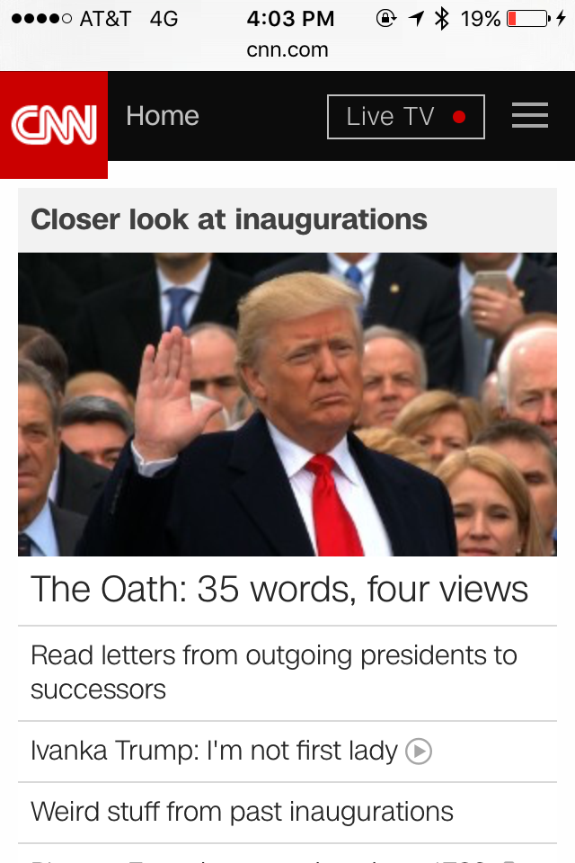
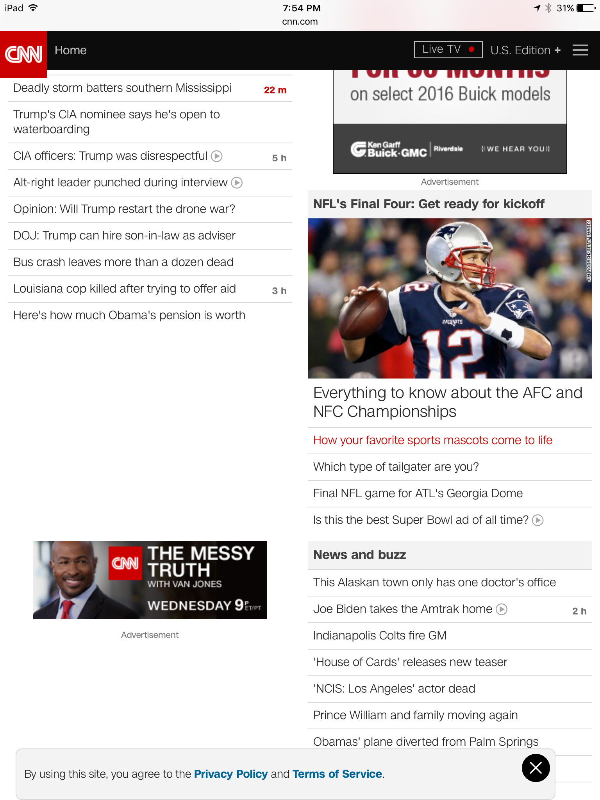

Design Principles in Mobile Sites
Proximity — Marchylia Pratikato

CNN.com
While I had the chance to do the 24-hours challenge as an assessment for the other project, the team and I have agreed to pull up the CNN main Website using the Internet Browser of the Mobile/Smart-Phone device--and not the Application (App) for the Mobile device for CNN. What I have gathered and noticed regarding the Design Principle of Proximity within its Home Page, CNN make it easier for the audience's eyes to flow through the content by using divider lines for each of the listed topics within the top of the page. For the media, such as the videos, each are given fair amount of distance apart in order for the viewers to comprehend the unity and distinguish the area for the media with the listed topics.
Alignment — Dalen Ward
CNN.com
The alignment of the CNN mobile webpage is pretty good. spacing for buttons on either side are centered, and there is a link for live TV on the top. Like the Disney site, CNN wants to you watch their live TV to make money. for the rest of the website, the aticles are neatly organized and its easy to read the titles on the small screen. The titles are aligned to the left with spacing so it's not touching the side, which makes it easier to read. Ads are located avery few articles in the list and is centered.
Repetition — Christopher Smith
CNN.com
As you look at this image, you can clearly see that there is a repetition in the style of text being used. In addition, you can see that the colors of red and black are continuously used in this site. In addition to that, there is a lot of repetition in the way that the columns are organized with their links. Each of the links within the site are identical in style and in shape. In addition, you can tell new sections whenever there is a larger article.
Contrast — Jake Stewart

Fox News
Contrast is shown here in the title banner because of the color of the text (white) and the color of the background (blue). The title pops out and draws the eye to it. The picture will be the next thing that draws the eye because of its size and location at the top of the page. The font size gets smaller with each title and subtitle so the reader pays more attention to the larger text.
Typography — Jake Stewart
Fox News
Typography is shown first by the title because of the size, color, and boldness. It’s clear that it is the title. The subsequent text throughout the page uses a slightly different font and size to distinguish it from the rest of the page.